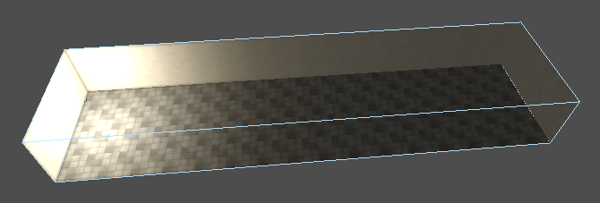
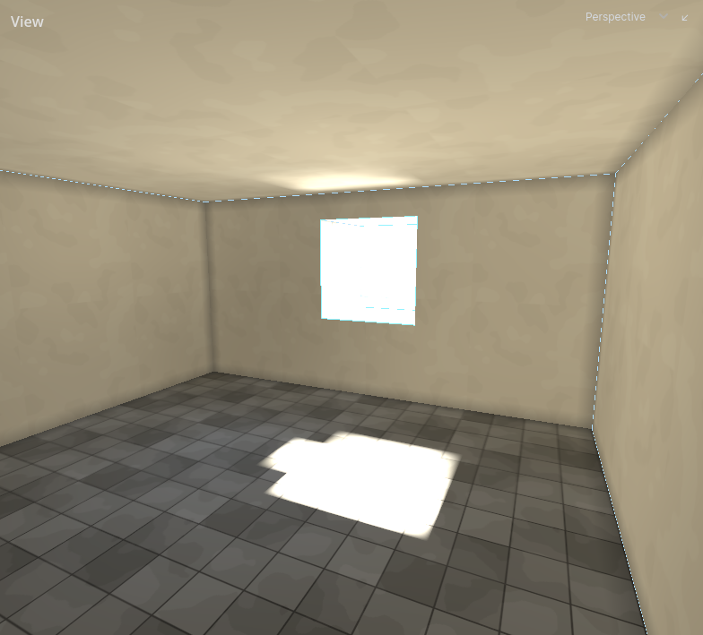
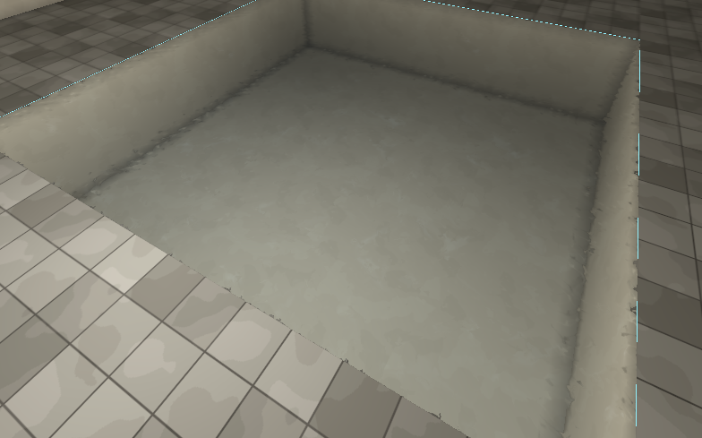

Lighting
A level's lighting is baked: worked out once by the lightmapper and stored with the map. Lamps, sky, glowing textures and light bouncing off walls all go into it. What a bake produces and when to run it again: Baking. How to run one: Lighting in the Editor section.
Lights
| Type | Light | Can the game change it? |
|---|---|---|
light_point |
A lamp, shining every way | No |
light_point_dynamic |
A lamp, shining every way | Yes: dim, brighten or switch it |
light_spot |
A lamp shining in a cone | No |
light_spot_dynamic |
A lamp shining in a cone | Yes: dim, brighten or switch it |
light_directional |
Sun or moon: parallel light from one direction | No |
light_directional_dynamic |
Parallel light from one direction | Yes, such as a flash of lightning |
| Property | Default | What it does |
|---|---|---|
energy |
256 | How bright it is |
color |
white | The colour of its light |
radius |
0 | Point and spot lights. How far it reaches, in world units. 0 lets the bake's falloff decide. |
rotation |
-90, 0, 0 | Spot lights. Where it is aimed: it shines down its own -Z, as Godot's SpotLight3D. Turn it with R. Put down, it shines straight down. |
spot_angle |
45 | Spot lights. The angle in degrees from the middle of its cone to the edge. Past it there is no light. |
spot_attenuation |
1 | Spot lights. How hard the cone's edge is. 1 fades from the middle out; more keeps it bright further out and cuts it off sharper. |
light_group |
empty | Lights with the same group name share one switch. See below. |
direction |
Directional lights. Which way the light travels. | |
follow_sky |
on | Directional lights. On: it is the sky's sun or moon, and its own direction, colour and energy are ignored. |
attenuation |
1 | Kept for older maps. Use energy instead. |
A spot is as bright down the middle of its cone as a point light of the same energy is in every direction; its cone takes light away rather than gathering it.
Static and dynamic
A static light is baked into each surface for good. It costs nothing while the game runs and never changes.
A dynamic light is baked too, into one of four light slots each surface has. The game can then dim or switch it. Static lights, glowing textures and static daylight use no slots.
Lights with the same light_group share one slot and one switch: a chandelier's candles that flicker as one, the fan of lights in a lightning flash. Driving any light in the group drives them all.
A surface reached by more than four dynamic groups keeps four and drops the rest. The bake warns about it. Group lights that belong to one effect, or give lamps a radius. See Baking.
How far a light reaches
The bake has two falloff curves, chosen in the lightmap tool:
| Falloff | What it does |
|---|---|
| Realistic | Brightness falls with the square of the distance and never quite reaches zero. A far lamp still washes a wall faintly and still takes one of its slots. |
| Linear | A straight ramp from the lamp to a hard edge, and darkness past it. Reach grows with energy. |
A point or spot light's radius gives it an end in either mode, and wins over the mode's own reach. Under realistic falloff it fades smoothly to nothing at the radius, with no visible edge.

Movable lights
light_point_movable and light_spot_movable are not baked. Each is a real Godot light (OmniLight3D, SpotLight3D) with a shadow from the map, for a light that has to move: a lantern swinging on a chain, a searchlight a script sweeps. A script moves it by moving the entity's node, and set_modulation() on the node flickers it.
| Property | Default | What it does |
|---|---|---|
energy |
256 | How bright it is, in lumens. It lights as a baked light of the same energy under realistic falloff does. |
radius |
384 | How far it reaches, in world units. It fades to nothing exactly there. |
falloff |
2 | The exponent it falls off by. 2 is a baked light's curve; more keeps the light close and darkens the edge of its pool. |
color |
white | The colour of its light |
shadows |
on | Whether the map throws a shadow in it |
enabled |
on | Whether it is on when the level starts. It can be switched while the game runs. |
A spot also has rotation, spot_angle and spot_attenuation, as the baked spot does.
Every movable light costs every frame it is in view, and its shadow most of all. Use a few, for what moves. Bake the rest.
Sky, sun and daylight
Outside light enters only through sky faces: faces whose texture name starts with sky_. See Textures.
- Sun and moon come from a directional light. With
follow_skyon, it takes the sky's sun or moon: its direction, colour and strength. A surface is lit by it only where a straight line from the surface toward the sun leaves through a sky face before meeting rock. - Daylight is the sky's own glow. Every sky face gives off the sky's light, which falls on whatever can see that face and bounces on from there.
Rooms sealed off from every sky face get neither. See Rooms and portals.
Daylight is static unless the sky's light is set dynamic in the Sky tool. A dynamic sky takes a slot on each surface it reaches, so the game can dim it as clouds pass. Give it the sun's light_group to dim both together.
For lightning, place several light_directional_dynamic aimed from different sides, follow_sky off, all in one light_group. Every window then catches at least one, and one switch flashes them all.

Emissive surfaces
A texture with an _emission partner glows. See Textures.
The glow lights the room with no lamp in it and bounces onto its neighbours. It is static: always on, never dimmed. Emission gain in the lightmap tool sets how bright a fully white emission texel glows.
Decals in the bake
A decal is ignored by the bake unless its affects_lighting is on. Then, where it covers a surface:
- Its colour changes the light that surface bounces. A black scorch mark stops the stone under it bouncing pale light into the room.
- If its picture has an
_emissionpartner, it glows: a lit sign, a glowing rune.
A decal that affects lighting is part of the bake. Moving it puts the bake out of date. Leave it off for decals that only need to be seen.
Water and caustics
Light meeting water is baked with the rest.
- Caustics: rippling light under and around water. Stirred water throws sharp, fast filaments; still water throws none. Deeper water throws bigger ones.
- Bending: light entering water bends toward the vertical, as it does in life.
- Tint: light under water takes the water's colour the further it travels through it.
- Reflection: a lit pool throws its own shape onto the walls and ceiling: a crisp patch off still water, a soft wash off running water.
- The underside: the surface seen from under the water is lit by what is in the water, not by what is above it.
All of these follow the water's Clarity, Tint and Disturbance. Changing them changes the caustics only after the next bake. See Fills.

Bounce
Light that reaches a surface bounces on from it, lighting what the lamp cannot see.
- How much bounces depends on how light the textures are. Dark stone bounces back only a small share of what hits it, so shadow stays shadow.
- Bounce gain 1.0 is what light actually does. Lower it for a darker, starker level rather than turning the lamps down.
- Colour bleed sets how far a surface takes the colour of light bounced onto it. It shows without a new bake.
- Bounce floor drops a switchable light's bounce from a wall where it is fainter than this, so the wall keeps its four light slots for lights that matter to it.
- Bounce range stops bounced light carrying further than a room or two, so a bright courtyard does not feed a cellar across the map.
These are bake options. See Lighting.
Moving brushwork
Entity brushwork is not baked by default: a door is somewhere else as often as not. It is lit like everything that moves (see below).
Turn on Bake into the world in the brush's Lighting section for brushwork that stays put until something moves it, such as a secret door flush with its wall. It is then baked with the walls, lit exactly as the wall around it, and hands over to the light probes when it moves.
Turn off Casts shadow for brushwork that is a marker, not matter: a trigger volume, a region a script watches. Light then passes through it. Leave it on for everything solid.
Things that move
The bake fills each room with light probes: points that record the light there. The player, guards, doors and anything else that moves are lit from the probes nearest them, so they darken in shadow and brighten under a lamp.
Probes are made fresh at every bake. Your game can also ask them how lit a spot is, for example to decide whether a guard can see someone standing there.
Lights that move
A light that moves, such as a torch a guard carries, cannot be baked. Your game adds these itself, as carried lights: real-time lights with a real shadow, set in lumens and a radius like the lights you place. A carried light shines every way, or in a cone as a spot light does. They light the walls on top of the bake, as a placed light of the same brightness would, and they count when the game asks how lit a spot is. Only the level throws their shadow: walls, brushwork that casts a shadow in the bake, and placed props. People do not.
Each one draws its shadow every frame, so keep them few: the people carrying them, not every candle in a hall. Place the candles.
A moving light that belongs to the level rather than to someone, such as a swinging lantern, is placed instead: see Movable lights.